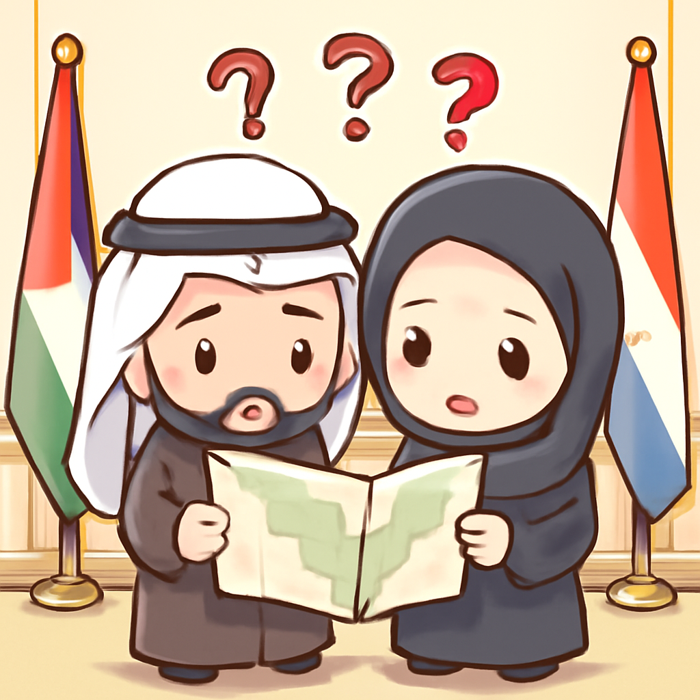
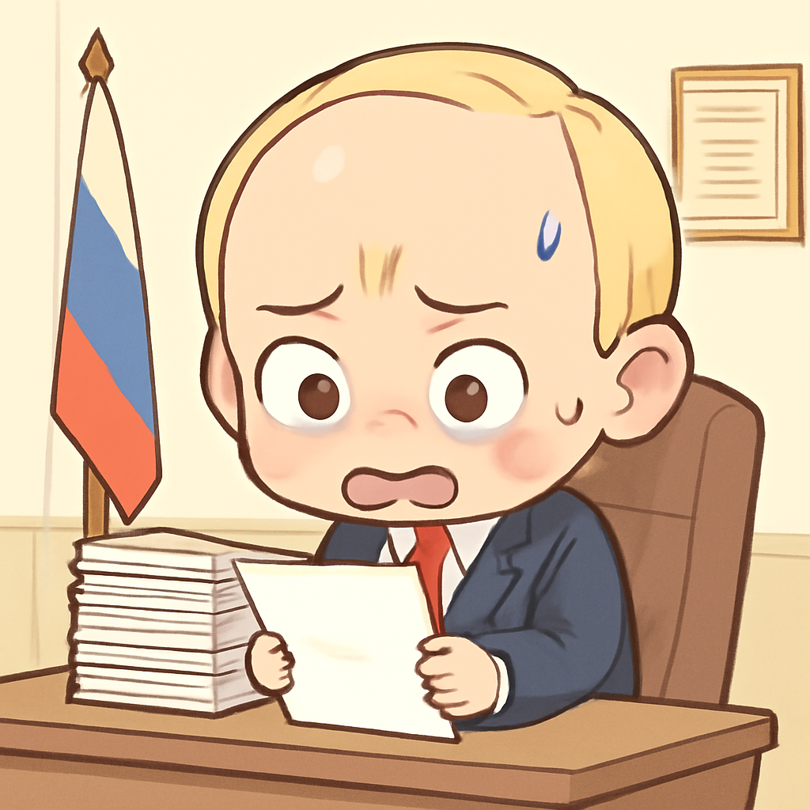
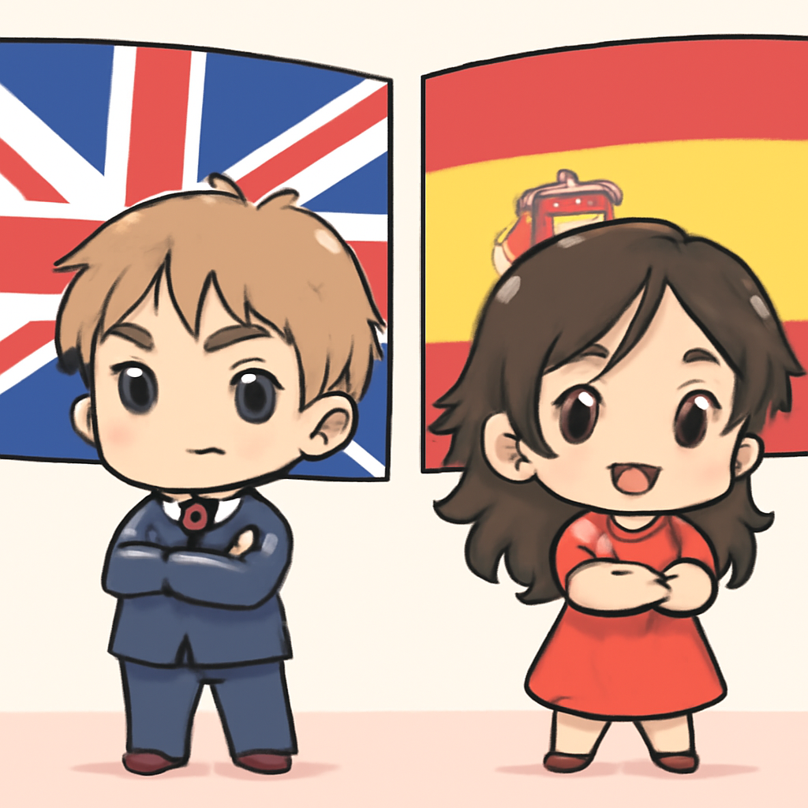

其一 · 伊朗 · 美方派遣特使進行伊朗談判
美方特使即將前往巴基斯坦進行伊朗會談。

在伊朗，兩位美國特使 Witkoff 和 Kushner 預計於本週六前往巴基斯坦，與伊朗外長阿巴斯·阿拉赫基會面。雖然目前無法確定會議內容，但這次會議對於改善美伊關係至關重要，特別是在當前緊張局勢下。希望他們的對話不會變成一場外交撕逼秀。
🔗 原始新聞 ↗
2026-04-25 · 以古觀今，以笑抗愁
美方特使即將前往巴基斯坦進行伊朗會談。

在伊朗，兩位美國特使 Witkoff 和 Kushner 預計於本週六前往巴基斯坦，與伊朗外長阿巴斯·阿拉赫基會面。雖然目前無法確定會議內容，但這次會議對於改善美伊關係至關重要，特別是在當前緊張局勢下。希望他們的對話不會變成一場外交撕逼秀。
🔗 原始新聞 ↗
俄羅斯面臨經濟困境，普京下令尋求解決方案。

在俄羅斯，普京最近下令經濟必須改善，這聽起來像是個不可能的任務，因為他們正面臨巨大的戰時開支壓力。隨著央行再次降息，專家擔心這樣的做法可能會讓經濟雪上加霜。希望俄羅斯的經濟能夠像他們的國歌一樣強大！
🔗 原始新聞 ↗
英國和西班牙對美方懲罰計畫表示強烈反對。

英國和西班牙政府對美國國防部報告中提到的懲罰措施表示強烈反對。這份內部郵件暗示了對兩國在伊朗戰爭中支持不足的懲罰選項。面對美國的威脅，這兩國似乎不打算屈服，可能會讓外交關係變得更加緊張。希望他們能以外交方式解決這場“冷戰”。
🔗 原始新聞 ↗
加沙地區即將進行長達二十年的首次地方選舉。
在加沙，當地居民期待已久的市政選舉即將在週末舉行。儘管哈馬斯不參加，但這次選舉被視為解決城市問題的機會。二十年來的選舉空白，讓人不禁想問：政治上是需要一個新的開始，還是只是新的麻煩？
🔗 原始新聞 ↗
科索沃法院對三名涉槍擊事件的塞族人判刑。
在科索沃，法院對三名涉槍擊事件的塞族人判處重刑，其中兩人被判終身監禁，另一人則獲得30年刑期。這起事件源於2023年的一次致命槍戰，顯示出這個地區的緊張局勢依然存在。希望未來能有更多的和平，而不是更多的法庭。
🔗 原始新聞 ↗